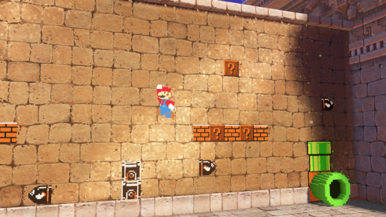

Lurking beneath the kaleidoscopic bustle of Super Mario Odyssey , Nintendo's tentpole 3D Mario for its Switch game system, due October 27, is something counterintuitively pacific. The game in motion is vibrant and frenetic, angular and elastic, a potpourri of gameplay ideas whizzing and bopping like something unleashed from a crazed chemistry experiment.
Freeze frame and the game betrays other aspirations. At first blush, its worlds seem convoluted, a mishmash of bits and bobs, buttons and platforms strung together dissonantly. The opposite feels true after spending half an hour leaping, diving and pinballing through its busy cityscapes and lively desert playgrounds. Its frills are scrupulously un-frilly, the space between its many interactive objects and goofy thingamabobs improbably harmonious. You might go so far as to call it Super Mario feng shui.
Except there's another term more apt. Kenta Motokura, the game's director, says Super Mario's Odyssey's inspiration comes from the concept of "hakoniwa," a Japanese word that refers to a style of miniature gardening whose objective is to create landscapes or scenes within the constraints of tightly packed or condensed spaces. Motokura says the design team wanted to craft intricate places chock full of surprises. It is in that sense the opposite of the "open air" approach baked into Nintendo's much-celebrated The Legend of Zelda: Breath of the Wild , a fantasy romp that by contrast feels so unpacked you can wander for days engaging in nothing of consequence, thrilled to see as much as do.
"The theme for Mario this time is a grand journey in search of surprise," says Super Mario Odyssey producer Yoshiaki Koizumi onstage during an E3 panel presentation. On his head is an oversized candy-red Mario cap whose brim sports a pair of cartoon eyes—a nod to the game's central novelty. He's talking about something game developers refer to as emergent play, a buzzphrase for whatever gets players to go "Whoa!" as they nudge joysticks and buttons. One thing that won't is the game's premise: Bowser, the series' big bad, has kidnapped Princess Peach for the umpteenth time, the twist in this case being that he intends to marry her.
The distance separating Mario from Peach is as vast as it's ever been, says Koizumi, describing Mario's journey as taking him "far, far away from the Mushroom Kingdom." To be fair, he traveled pretty darned far in both Super Mario Galaxy games. Odyssey's differences are more qualitative. As Mario zips between domains in an airship with Victorian vibes, he passes through quasi-realistic urban zones styled to resemble a retro-futuristic mashup of early 20th and 21st century Manhattan.
It is surreal, scooting up to a normal-looking dude in a zoot suit as Nintendo's cherubic red-blue plumber, or bounding along the tops of skyscrapers, or clambering over municipal pipes and sewer holes, or plumbing the depths of art deco buildings. As I played through the presentation's metropolitan demo, it brought to mind something I hadn't thought of in years: a long gone game magazine's depiction of Mario superimposed over a photograph of a real city, that tease part of speculation during the mid-1990s of what a Mario game on Nintendo's "Project Reality"—the codename for the project that eventually produced the Nintendo 64—would look like.
Life is strange, but Super Mario Odyssey is stranger, a mashup of jazzy swing era tunes (with lyrics and a vocalist, a series first), vast cityscapes, myriad worlds (including black and white ones), 8-bit 2D mini-games that wrap around 3D topography, and a pivotal new thing you do with your cap, dubbed Cappy. Let's talk about that.
Mario still performs all of the maneuvers 3D grammarian Shigeru Miyamoto established in 1996's Super Mario 64, bounding off walls or executing backflips and butt stomps. But tap a button or flick the Switch's motion controllers and he flings his cap like a boomerang. A very smart boomerang, in that it functions as either a weaponized or inquisitive extension of Mario himself, tagging or triggering things he can't otherwise reach, assailing enemies from any direction, breaking crates, knocking objects around, turning on firehoses and more, all in concert with his normal actions.
Or some brand new abnormal ones, like when players chuck the cap at certain enemies. Tag a foe and Mario will leap through space, phantom-like, to become the thing contacted, his actions momentarily circumscribed by the possessed enemy's range of behaviors. Nintendo calls this "capturing," and it is a trip. Fling the cap at Bullet Bills, for instance, and you can soar over insurmountable gaps (shake the Joy-Con and you'll fly a bit further). Capture a tank and you can use the Joy-Con gyros to aim and shoot. Capture a Hammer Bro and you can hurl frying pans at foes (shake the Joy-Cons to throw faster). Capture a Chain Chomp and you can shatter rocks. Capture a plant with extensible "legs" and you can climb an object with vertiginous platforms. Or capture a dinosaur, and, well, let your imagination do the walking. The puzzling possibilities seem positively fractal.
Your goals still hinge on collecting things, in this case Power Moons sequestered throughout levels. As in prior Mario games, you have to gather a certain quantity before unlocking access to new areas. But the economy or ratio of moons-to-making-progress tilts toward epic exploration quests. Unlike the three-per-level Green Stars in Super Mario 3D World, Power Moons are ubiquitous, loitering in every nook and cranny. You can find them broken into pieces, or even earn enough cash to buy them outright. Almost anything that draws attention could conceal them, and Nintendo says there are many more of them than the 120 "stars" in Super Mario 64, or "shines" in Super Mario Sunshine.
Which brings us back to hakoniwa, in concert with a second Japanese word, "kyoukan," which Nintendo's Bill Trinen tells me has several meanings, but here is meant to invoke "shared feelings" or "emotional resonance." Koizumi says this has to do with how players intuit what they're seeing. And not just the de facto "player" culturally implicit in that claim, but players in a cross-cultural sense.
"Things that hurt you should look like they'll hurt you, and anything that is advantageous to pick up should be shiny and attractive," says Koizumi. "We are aiming for design that allows people from anywhere in the world to play at a glance."
"It is, as always, impossible to gauge in the space of half an hour what the final experience will be like. Nintendo made it clear it has much more to reveal, including the grander role the game's signature tune apparently plays. But the notion of a Super Mario sandbox game in which every square inch of the world harbors this amplitude of dense, organic play feels compelling in a way that bears cautious comparison to Breath of the Wild's mold-breaking ideas. Though both games argue different theses, they are both carefully attuned to the delights had when surprise happens organically. Nintendo has long understood what a precious commodity that is in any game, and at this point, Super Mario Odyssey feels dressed with it to the nines.
Lurking beneath the kaleidoscopic bustle of Super Mario Odyssey, Nintendo's tentpole 3D Mario for its Switch game system, due October 27, is something counterintuitively pacific. The game in motion is vibrant and frenetic, angular and elastic, a potpourri of gameplay ideas whizzing and bopping like something unleashed from a crazed chemistry experiment.
As the sixth system in the Nintendo 3DS and 2DS family of consoles, the New Nintendo 2DS XL is a solid offering for tech enthusiasts, collectors and children alike. With a design that’s pleasing to the eye and an exterior upper screen that’s satisfying to touch, the 2DS XL is only a budget device by the materials it uses rather than the hardware it contains.
A year ago today, July 6, Niantic unleashed Pokémon Go, an unexpectedly fitness-aspirational scavenger hunt whose dazzling uptake no one saw coming. In hindsight, we should have guessed better. Pokémon is the third-bestselling games franchise in the world after Tetris and Mario, and that's restricting our count to the handheld turn-based roleplaying games at the franchise core.
The breadth of content in The Legend of Zelda: Breath of the Wild is astounding. But with the arrival of the Master Trials DLC, a 100+ hour game can easily turn into much more. Between the challenging Trial of the Sword to the variety of masks on offer, the DLC is quite the treasure trove for the die-hard Zelda fan.